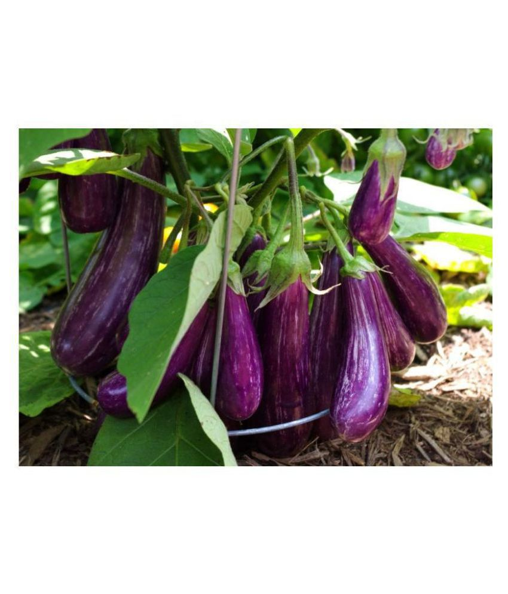

Urban Herbs
Urban Herbs
Brinjal is one of the most common tropical vegetables grown in India and belongs to the family Solanaceae. Brinjal is also known as eggplant, aubergine, garden egg, baigan , bandanekai, vangi and vankaya in different parts of the world. It is an important vegetable crop grown in India throughout the year. The Brinjal Crop During its period is effected by a varied numbers of pests and diseases. Though the farmers apply chemicals to control and eradicate the pest and pathogens, the awareness of the ill effects of the pesticides in the environment makes them go Organic.c
Different Varieties of Brinjal or Eggplant for Organic Farming
Brinjal or Eggplant varieties differ in size, shape, color, growth habit, and even maturation time.
Oval to oblong eggplants produces the large, oval-shaped, purplish-black color eggplants seen in most supermarkets. Most Brinjal varieties produce best in warm climates.
Japanese eggplants mature faster than oval eggplants, producing numerous long and slender fruits.
Small-fruited eggplants are the best type for compact spaces and some varieties produce fruits in attractive clusters which may be green, white, lavender, or purple.
Novelty eggplants contain unusual varieties from around the world, such as orange Turkish eggplant, green Thai eggplant, or egg-shaped white eggplant.
Brinjal Varieties in India are:-
Pusa Purple Long, Pusa Purple Cluster, Azad Kranti, Pusa Purple Round, Pusa Hybrid-5, Arka Keshav, Arka Shirish, Pusa Barsati, Arka Kusumkar, Arka Navneet(F1), Pusa Uttam, Arka Navneet, Punjab Bahar, and Arka Nidhi.
Other varieties of Brinjal are:-
Manjri Gota, Vaishali, Pusa Kranti, Arka Sheel, Pusa Ankur, Arka Neelkanth, Pant Rituraj, T-3, Dudhia, Swarna Shree, Swarna Mani, Swarna shyamli, Swarna Pratibha, Swarna Shobha, Arka Avnish, Arka Harshitha, Kuchia, Pant Samrat.
BRINJAL SEED RATE AND PLANTING DISTANCE
TASKS:
1. Keep the spacing between two seed plant at distance of around 50-60 cm in both the ways
2. Do the planting in evening and irrigation should be done immediately.
3. at the time of transplanting the seedlings must be dipped in a solution of bavistin.
Our company will provide you any kind of assistace on problem you faces during the cultivation. HAPPY FARMING!!!
Download the certificate from below
created with
HTML Layout generator .